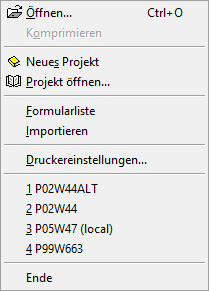

Wenn im WinLine Formular Editor kein weiteres Fenster geöffnet wurde, dann stehen folgende Funktionen im Menü "Datei" zur Verfügung:

Ø Öffnen…
Mit Hilfe eines Auswahlfensters kann ein vorhandenes Formular geöffnet werden.
Ø Komprimieren (wird noch nicht unterstützt)
Mit diesem Menüpunkt kann die Datei MESOFORMX.MESO (X steht für die Sprache) komprimiert werden. Das ist dann sinnvoll, wenn z.B. viele angepasste Formulare gelöscht wurden.
Ø Neues Projekt
Über diesen Menüpunkt kann ein neues MDP-Projekt erstellt werden. MDP-Projekte dienen zum Transport von geänderten Formularen, können aber auch Scripte oder Fensteränderungen beinhalten. Nähere Information entnehmen Sie bitte dem Kapitel "MDP Projekt".
Hinweis
Damit ein MDP-Projekt am Ziel eingelesen werden kann, muss eine entsprechende Lizenz vorhanden sein.
Ø Projekt öffnen…
Über diesen Menüpunkt kann ein bestehendes Projekt geöffnet werden, wo dann z.B. weitere geänderte Formulare hinzugefügt werden können. Nähere Information entnehmen Sie bitte dem Kapitel "MDP Projekt".
Ø Formularliste
Durch Anwahl dieses Menüpunkts wird die Formularliste, in welcher alle Formulare aufgelistet werden, aufgerufen.
Ø Importieren
Diese Option ermöglicht den Import von Formularen, welche als Textdatei (*.PDF) gespeichert wurden bzw. von Formularen, die in einer früheren Programmversion erstellt wurden. Exportierte Formulare können auch einfach über "Drag & Drop" in den Formular Editor gezogen und damit importiert werden.
Hinweis
Enthält ein Formular eine "VB-Script" Formel, welche wiederum ein "@"-Zeichen beinhaltet, so muss vor dem Import manuell vor dem "@"-Zeichen ein "Backslash (\@) gesetzt werden. Ansonsten kann das Formular nicht importiert werden.
Hintergrund dafür ist, dass der VB Script Code selbst ist durch "@"-Zeichen eingerahmt ist.
Ø Druckereinstellungen…
Durch Anwahl dieses Eintrags wird das Fenster "Windows-Druckeinstellungen" geöffnet, in welchem Drucker eingerichtet und Standardeinstellungen für die verwendeten Drucker vorgenommen werden können.
Ø Schnellauswahl
Zwischen den Punkten "Druckereinstellungen" und "Ende" werden die 4 zuletzt gespeicherten Formulare für einen direkten Aufruf angezeigt.
Hinweis
Der Zusatz "(local)" bedeutet, dass es sich um ein lokales Formular handelt.
Ø Ende
Mit Hilfe dieses Eintrags wird der WinLine Formular Editor beendet. Falls ein Formular noch geöffnet ist und nach der letzten Bearbeitung noch nicht abgespeichert wurde, dann erfolgt zunächst eine Speicherungsabfrage.